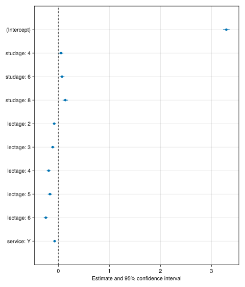
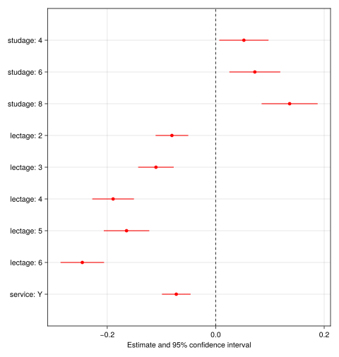

![]()
Code
progress = falseprogress = falseIn the following, we’ll be using the Makie ecosystem for plottig. There are multiple major plotting ecosystems in Julia and it’s largely a matter of personal preference which to use. However, some plotting tools and packages only exist in one ecosystem, such as MixedModelsMakie.jl for several convenient plotting functions related to MixedModels.jl.
using CairoMakie # in Makie, you load a particular backend
using MixedModelsMakieMost plotting functions come in two variants:
Figure or Axis (a component of a figure).Following the broader convention within Julia, the mutating variants include a ! in their name. It is quite common for the full service variant to be a minimal wrapper around the mutating variant and for the documentation of the full service variant to refer to the mutating variant, stating that all arguments are forwarded. We’ll see a few examples of this pattern in the following.
We’ll use the same models from the introduction. They are repeated here for convenience.
using MixedModels
insteval = MixedModels.dataset("insteval")
fm1 = fit(MixedModel,
@formula(y ~ 1 + studage + lectage + service + (1|s) + (1|d) + (1|dept)),
insteval; progress)| Est. | SE | z | p | σ_s | σ_d | σ_dept | |
| (Intercept) | 3.2908 | 0.0324 | 101.45 | <1e-99 | 0.3264 | 0.5106 | 0.0787 |
| studage: 4 | 0.0519 | 0.0232 | 2.24 | 0.0249 | |||
| studage: 6 | 0.0721 | 0.0240 | 3.01 | 0.0026 | |||
| studage: 8 | 0.1363 | 0.0264 | 5.17 | <1e-06 | |||
| lectage: 2 | -0.0808 | 0.0154 | -5.25 | <1e-06 | |||
| lectage: 3 | -0.1102 | 0.0167 | -6.59 | <1e-10 | |||
| lectage: 4 | -0.1892 | 0.0196 | -9.65 | <1e-21 | |||
| lectage: 5 | -0.1644 | 0.0214 | -7.68 | <1e-13 | |||
| lectage: 6 | -0.2460 | 0.0205 | -12.01 | <1e-32 | |||
| service: Y | -0.0727 | 0.0135 | -5.40 | <1e-07 | |||
| Residual | 1.1762 |
fm2 = fit(MixedModel,
@formula(y ~ 1 + studage + lectage + service +
(1 | s) +
(1 + service | d) +
(1 + service | dept)),
insteval; progress)| Est. | SE | z | p | σ_s | σ_d | σ_dept | |
| (Intercept) | 3.2985 | 0.0308 | 107.26 | <1e-99 | 0.3242 | 0.5160 | 0.0642 |
| studage: 4 | 0.0502 | 0.0232 | 2.16 | 0.0306 | |||
| studage: 6 | 0.0573 | 0.0242 | 2.37 | 0.0180 | |||
| studage: 8 | 0.1128 | 0.0268 | 4.21 | <1e-04 | |||
| lectage: 2 | -0.0787 | 0.0156 | -5.03 | <1e-06 | |||
| lectage: 3 | -0.1036 | 0.0169 | -6.14 | <1e-09 | |||
| lectage: 4 | -0.1837 | 0.0199 | -9.21 | <1e-19 | |||
| lectage: 5 | -0.1503 | 0.0217 | -6.94 | <1e-11 | |||
| lectage: 6 | -0.2232 | 0.0209 | -10.66 | <1e-25 | |||
| service: Y | -0.0281 | 0.0498 | -0.56 | 0.5731 | 0.3906 | 0.1639 | |
| Residual | 1.1698 |
fm3 = fit(MixedModel,
@formula(y ~ 1 + studage + lectage + service +
(1 | s) +
(1 + service | d) +
zerocorr(0 + studage | d) +
(1 + service | dept)),
insteval; progress)| Est. | SE | z | p | σ_d | σ_s | σ_dept | |
| (Intercept) | 3.3084 | 0.0290 | 114.23 | <1e-99 | 0.5022 | 0.3235 | 0.0453 |
| studage: 4 | 0.0550 | 0.0277 | 1.98 | 0.0473 | 0.2699 | ||
| studage: 6 | 0.0544 | 0.0265 | 2.06 | 0.0398 | 0.2074 | ||
| studage: 8 | 0.1097 | 0.0293 | 3.74 | 0.0002 | 0.2538 | ||
| lectage: 2 | -0.0856 | 0.0172 | -4.98 | <1e-06 | |||
| lectage: 3 | -0.0983 | 0.0188 | -5.24 | <1e-06 | |||
| lectage: 4 | -0.1996 | 0.0218 | -9.15 | <1e-19 | |||
| lectage: 5 | -0.1651 | 0.0231 | -7.14 | <1e-12 | |||
| lectage: 6 | -0.2478 | 0.0221 | -11.21 | <1e-28 | |||
| service: Y | -0.0199 | 0.0504 | -0.39 | 0.6930 | 0.3704 | 0.1671 | |
| Residual | 1.1581 |
Additionally, we’ll use a model based on the sleepstudy dataset. The data are from a study looking at the impact of sleep deprivation on reaction time and has three variables:
subj: the participantreaction: reaction time in milliseconds (mean across tasks)days: days of sleep restrictionsleep = fit(MixedModel,
@formula(reaction ~ 1 + days + (1 + days|subj)),
MixedModels.dataset("sleepstudy"))Minimizing 4 Time: 0:00:00 (26.42 ms/it)
objective: 1803.8532002844106
Minimizing 57 Time: 0:00:00 (13.01 ms/it)| Est. | SE | z | p | σ_subj | |
| (Intercept) | 251.4051 | 6.6323 | 37.91 | <1e-99 | 23.7805 |
| days | 10.4673 | 1.5022 | 6.97 | <1e-11 | 5.7168 |
| Residual | 25.5918 |
The function coefplot creates a plot of the coefficient estimates along with associated confidence intervals.
coefplot(fm1)
Because the intercept is often on a different scale than categorical predictors and is not of particular interest, coefplot also has an option for not including it.
coefplot(fm1; show_intercept=false, color=:red)
We can use the mutating variant coefplot! to put the plots from all models into a single axis for comparison purposes.
let f = Figure()
ax = Axis(f[1, 1]; title="Comparison of estimates")
coefplot!(ax, fm1; show_intercept=false, conf_level=0.68, label="fm1")
coefplot!(ax, fm2; show_intercept=false, conf_level=0.68, label="fm2")
coefplot!(ax, fm3; show_intercept=false, conf_level=0.68, label="fm3")
axislegend(ax, "model"; merge=true, position=:rb) # _r_ight _b_ottom
f
endThe function caterpillar creates a similar plot of the BLUPs and their associated prediction intervals. The name caterpillar comes from the hairy appearance that occurs with large numbers of random effects. In lme4, the comparable plot was called dotplot.
# select the grouping variable we want to plot
caterpillar(fm1, :dept)When plotting the BLUPs associated with a grouping variable with a very large number of levels, we can use qqcaterpillar, which combines a caterpillar plot a QQ-plot like spacing on the y-axis in order to give a better impression of the distribution of the random effects.
qqcaterpillar(fm1, :dept)qqcaterpillar(fm1, :d)When a grouping variable is associated with multiple experimental variables, then each receives its own panel in the caterpillar plot.
caterpillar(fm2, :dept)By default, the levels of the grouping variable are sorted by their value for the first column. However, we can select which variables are displayed and which column is used for sorting.
caterpillar(fm2, :dept; cols=["(Intercept)", "service: Y"], orderby=2)Because caterpillar plots can contain multiple axes, they cannot be plotted directly into an axis, but they can be plotted into a GridLayout (i.e. a sublayout) within a Figure.
let f = Figure(; title="Random effects")
caterpillar!(f[1, 1], fm2, :dept)
Label(f[0, 1], "dept"; tellwidth=false)
qqcaterpillar!(f[1, 2], fm2, :d)
Label(f[0, 2], "d(ozent)"; tellwidth=false)
f
end
qqnorm(fm1)qqplot(Normal(0, fm1.σ), fm1)function diagnostic_plot!(f, model)
ax = Axis(f[1, 1]; xlabel="fitted", ylabel="observed",
title="Observed vs fitted", aspect=AxisAspect(1))
scatter!(ax, fitted(model), response(model); alpha=0.5)
ablines!(ax, 0, 1; linestyle=:dash)
ax = Axis(f[1, 2]; xlabel="fitted", ylabel="residual",
title="Residuals vs fitted")
scatter!(ax, fitted(model), residuals(model); alpha=0.5)
hlines!(ax, 0; linestyle=:dash)
ax = Axis(f[2, 1]; xlabel="theoretical quantiles", ylabel="residuals",
title="Normal QQ", aspect=AxisAspect(1))
qqnorm!(ax, model)
ax = Axis(f[2, 2]; xlabel="Residual value", ylabel="density",
title="Residuals")
density!(ax, residuals(model))
Label(f[0, :], "Regression diagnostics";
tellwidth=false, fontsize=24)
colsize!(f.layout, 1, Auto(0.5))
return f
end
diagnostic_plot!(Figure(), sleep)
One of the most powerful aspects of mixed effects models is shrinkage, i.e. the regularization entailed in the random effects. shrinkageplot displays a comparison of the values obtained for each level of the grouping variable based on a mixed models fit and a fit comparable to traditional ordinary least squares.
shrinkageplot(fm2, :dept)While it may look like some values go further away from the grand mean, plotting the associated correlation ellipses (computed from the correlation estimates in the mixed model) shows that these values are on a level-curve closer to the grand mean than where they started.
shrinkageplot(fm2, :dept, ellipse=true, ellipse_scale=10, n_ellipse=10)When there are multiple predictors associated with a given grouping variable, then shrinkageplot displays all pairwise combinations.
shrinkageplot(fm3, :d, ellipse=true)
In the case of overparameterized random effects, one or more dimensions will be degenerate and the corresponding panel will show a line or a point mass instead of a cloud of points.
Similar to caterpillar, shrinkageplot uses multiple axes internal and so must be plotted directly into a Figure.
let f = Figure()
Label(f[0, 1], "d(ozent)"; tellwidth=false)
shrinkageplot!(f[1, 1], fm2, :d)
Label(f[0, 2], "dept"; tellwidth=false)
shrinkageplot!(f[1, 2], fm2, :dept)
f
end
let f = Figure()
Label(f[0, 1], "d(ozent)"; tellwidth=false)
shrinkageplot!(f[1, 1], fm3, :d)
Label(f[0, 2], "dept"; tellwidth=false)
shrinkageplot!(f[1, 2], fm3, :dept)
f
end